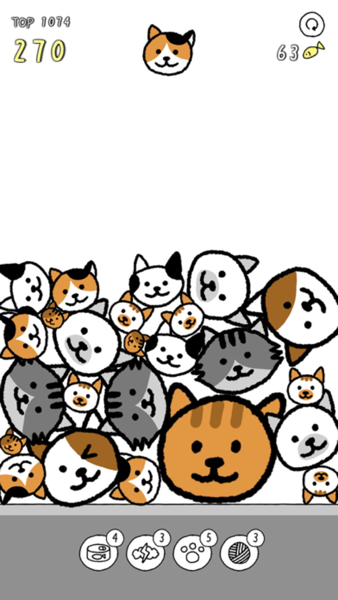
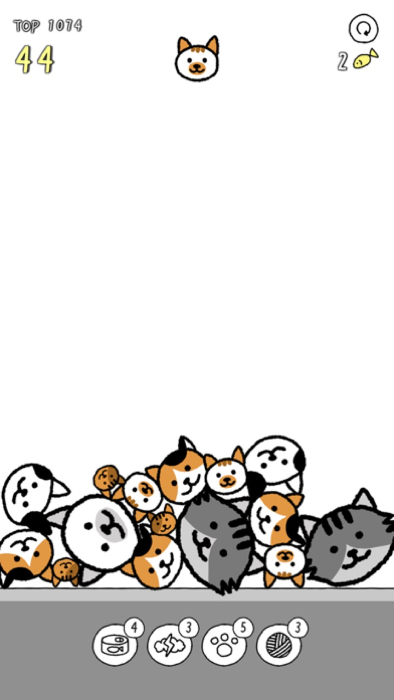
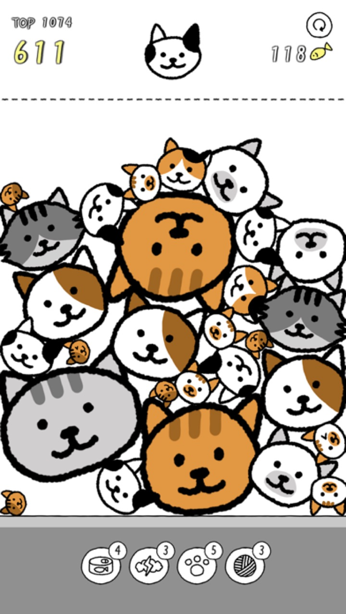

★4.8
App Store評価


同じねこを合体させると、もっと大きなねこに — パァン!とはじける音でストレスもはじけます


★4.8 · 世界の評価10,000+ · 無料
+=


同じねこが出会うと、次のねこが生まれます — ゲーム内の11種をそのまま連れてきました。
そして、いちばん大きな11番のねこ同士がついに出会ったら…？ ぜひ自分の目で 🎆

ルールはひとつ — 同じねこをくっつけると、もっと大きなねこに。でも、ねこ耳の出っぱりのせいでコロコロ転がる物理が思いどおりにならなくて、つい「もう一局」。パァン!とはじける音と振動はごほうびです。
のんびりクラシックから、手が忙しくなるスピード、5分タイムアタック、1000点チャレンジまで。モードごとにグローバルランキングがあって、今日のハイスコアを競えます。

メガネ・ぼうし・リボンでねこを着せ替えて、背景テーマもお好みで。広告は見たいときだけ — ネットなしのオフラインでも、いつでも一局。
App Storeに実際に投稿された声

"猫のカタチのスイカゲーム。ただ、耳の出っぱりがあるから、なかなか思ったようにくっついてくれない・・・！そこがまた楽しくて、気づけば時間が経っている。クセになります！"

"とってもかわいいです。消える音と振動が癖になる"

"はじめたら止められない！弾けるのは私の心！"
「ねこはほんとかわいい」(★4.9 · レビュー71,000+)を作ったスタジオから


iOS & Android 無料